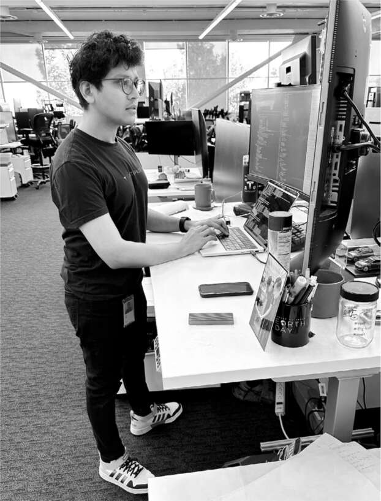

Những chiếc xe học hỏi từ con người
"Nó giống như ChatGPT, nhưng dành cho ô tô," Dhaval Shroff nói với Musk. Anh đang so sánh dự án của mình tại Tesla với chatbot trí tuệ nhân tạo vừa được OpenAI, phòng thí nghiệm mà Musk đồng sáng lập với Sam Altman vào năm 2015, phát hành. Trong gần một thập kỷ, Musk đã nghiên cứu nhiều hình thức trí tuệ nhân tạo khác nhau, bao gồm ô tô tự lái, robot Optimus và giao diện não-máy Neuralink. Dự án của Shroff liên quan đến lĩnh vực học máy mới nhất: thiết kế một hệ thống ô tô tự lái học hỏi từ hành vi của con người. "Chúng tôi xử lý một lượng dữ liệu khổng lồ về cách con người thực sự hành động trong một tình huống lái xe phức tạp, và sau đó chúng tôi huấn luyện mạng nơ-ron của máy tính để bắt chước điều đó."
Musk đã yêu cầu gặp Shroff—người đôi khi đóng vai trò là người thứ tư cùng với James, Andrew và Ross—vì anh đang cân nhắc thuyết phục anh rời khỏi nhóm Autopilot của Tesla và đến làm việc tại Twitter. Shroff hy vọng tránh điều đó bằng cách thuyết phục Musk về tầm quan trọng then chốt, đối với Tesla và thế giới, của dự án anh đang thực hiện, một thành phần "học hỏi từ con người" cho phần mềm tự lái của Tesla mà họ gọi là "trình lập kế hoạch đường đi bằng mạng nơ-ron."
Cuộc gặp của họ được lên lịch vào một ngày diễn ra quá nhiều sự kiện đến mức khó tin, như thể được viết ra từ một kịch bản phim: Thứ Sáu, ngày 2 tháng 12 năm 2022, ngày bộ Twitter Files đầu tiên được Matt Taibbi đăng tải. Shroff đến trụ sở Twitter vào buổi sáng hôm đó theo yêu cầu, nhưng Musk, vừa trở về từ buổi ra mắt Cybertruck ở Nevada, đã phải xin lỗi. Anh ấy quên mất rằng mình phải bay đến New Orleans để gặp Tổng thống Macron thảo luận về các quy định kiểm duyệt nội dung của Châu Âu. Musk đề nghị Shroff quay lại vào buổi tối. Trong lúc chờ đợi Macron, Musk nhắn tin cho Shroff để dời cuộc họp muộn hơn. "Tôi sẽ bị trễ bốn tiếng," Musk nhắn tin. "Anh có thể đợi được không?" Cũng trong lúc đó, anh ấy bất ngờ nhắn tin cho Bari Weiss và Nellie Bowles, yêu cầu họ bay đến San Francisco và gặp anh ấy tối hôm đó để hỗ trợ việc Twitter Files.
Khi Musk trở lại San Francisco vào đêm muộn, cuối cùng anh cũng có thời gian gặp Shroff, người đã giải thích chi tiết về dự án lập kế hoạch mạng nơ-ron mà anh đang thực hiện. "Tôi nghĩ việc tôi tiếp tục làm những gì mình đang làm là cực kỳ quan trọng", Shroff nói. Lắng nghe anh ấy, Musk lại hào hứng với dự án và đồng ý. Anh nhận ra rằng, trong tương lai, Tesla sẽ không chỉ là một công ty xe hơi và cũng không chỉ là một công ty năng lượng sạch. Với Full Self-Driving, robot Optimus và siêu máy tính học máy Dojo, Tesla sẽ trở thành một công ty trí tuệ nhân tạo - một công ty hoạt động không chỉ trong thế giới ảo của chatbot mà còn trong thế giới thực của các nhà máy và đường xá. Anh ấy đã nghĩ đến việc thuê một nhóm chuyên gia AI để cạnh tranh với OpenAI, và nhóm lập kế hoạch mạng nơ-ron của Tesla sẽ bổ sung cho công việc của họ.
Trong nhiều năm, hệ thống Autopilot của Tesla dựa trên phương pháp dựa trên quy tắc. Nó lấy dữ liệu hình ảnh từ camera của ô tô và xác định các yếu tố như vạch kẻ làn đường, người đi bộ, phương tiện, tín hiệu giao thông và bất kỳ thứ gì khác trong phạm vi của tám camera. Sau đó, phần mềm áp dụng một tập hợp các quy tắc, chẳng hạn như Dừng khi đèn đỏ; Đi khi đèn xanh; Giữ ở giữa các vạch kẻ làn đường; Không vượt vạch đôi màu vàng vào làn đường ngược chiều; Chỉ đi qua giao lộ khi không có xe nào đến đủ nhanh để va vào bạn; vân vân. Các kỹ sư của Tesla đã tự viết và cập nhật hàng trăm nghìn dòng mã C++ để áp dụng các quy tắc này cho các tình huống phức tạp.
Dự án lập kế hoạch mạng nơ-ron mà Shroff đang thực hiện sẽ bổ sung một tầng mới. "Thay vì xác định đường đi phù hợp của xe chỉ dựa trên các quy tắc," Shroff nói, "chúng tôi xác định đường đi phù hợp của xe bằng cách dựa vào một mạng nơ-ron học hỏi từ hàng triệu ví dụ về những gì con người đã làm." Nói cách khác, đó là sự bắt chước con người. Đối mặt với một tình huống, mạng nơ-ron chọn một đường đi dựa trên những gì con người đã làm trong hàng nghìn tình huống tương tự. Giống như cách con người học nói, lái xe, chơi cờ vua, ăn mì Ý và làm hầu hết mọi việc khác; chúng ta có thể được cung cấp một tập hợp các quy tắc để tuân theo, nhưng chủ yếu chúng ta học hỏi các kỹ năng bằng cách quan sát cách người khác thực hiện chúng. Đó là phương pháp tiếp cận học máy do Alan Turing hình dung trong bài báo năm 1950 của ông, "Máy tính và Trí tuệ".
Tesla sở hữu một trong những siêu máy tính lớn nhất thế giới để huấn luyện mạng nơ-ron. Nó được cung cấp sức mạnh bởi các đơn vị xử lý đồ họa (GPU) do nhà sản xuất chip Nvidia chế tạo. Mục tiêu của Musk trong năm 2023 là chuyển sang sử dụng Dojo, siêu máy tính mà Tesla đang tự xây dựng từ đầu, để dùng dữ liệu video huấn luyện hệ thống AI. Với chip và cơ sở hạ tầng do đội ngũ AI của Tesla thiết kế, nó có gần tám exaflop (1018 phép tính mỗi giây), biến nó thành máy tính mạnh nhất thế giới cho mục đích này. Nó sẽ được sử dụng cho cả phần mềm tự lái và robot Optimus. "Thật thú vị khi phát triển chúng cùng nhau", Musk nói. "Cả hai đều đang cố gắng định hướng trong thế giới."
Đầu năm 2023, dự án lập kế hoạch mạng nơ-ron đã phân tích 10 triệu khung hình video thu thập từ xe của khách hàng Tesla. Điều đó có nghĩa là nó chỉ tốt bằng mức trung bình của người lái xe? "Không, vì chúng tôi chỉ sử dụng dữ liệu từ con người khi họ xử lý tình huống tốt", Shroff giải thích. Những người dán nhãn, phần lớn ở Buffalo, New York, đã đánh giá các video và chấm điểm. Musk yêu cầu họ tìm kiếm những điều "một tài xế Uber năm sao sẽ làm", và đó là những video được dùng để huấn luyện máy tính.
Musk thường xuyên đi dạo quanh tòa nhà Palo Alto của Tesla, nơi các kỹ sư Autopilot ngồi trong một không gian làm việc mở, và ông sẽ quỳ xuống bên cạnh họ để thảo luận. Một ngày nọ, Shroff cho ông xem tiến độ mà họ đang đạt được. Musk rất ấn tượng, nhưng ông có một câu hỏi: Liệu toàn bộ phương pháp mới này có thực sự cần thiết? Liệu nó có hơi quá mức cần thiết? Một trong những châm ngôn của ông là không bao giờ nên dùng tên lửa hành trình để giết ruồi; chỉ cần dùng vỉ đập ruồi. Liệu việc sử dụng mạng nơ-ron để lập kế hoạch đường đi có phải là một cách quá phức tạp để xử lý một vài trường hợp ngoại lệ rất khó xảy ra?
Shroff đã cho Musk xem các trường hợp mà bộ lập kế hoạch mạng nơ-ron hoạt động tốt hơn so với phương pháp dựa trên quy tắc. Bản demo có một con đường đầy rác, nón giao thông đổ, và các mảnh vụn ngẫu nhiên. Một chiếc xe được dẫn đường bởi bộ lập kế hoạch mạng nơ-ron đã có thể luồn lách quanh các chướng ngại vật, vượt qua vạch kẻ làn đường và phá vỡ một số quy tắc khi cần thiết. "Đây là những gì xảy ra khi chúng ta chuyển từ dựa trên quy tắc sang dựa trên mạng lưới đường đi", Shroff nói với ông. "Chiếc xe sẽ không bao giờ va chạm nếu bạn bật tính năng này, ngay cả trong môi trường không có cấu trúc." Đó là kiểu bước nhảy vọt vào tương lai khiến Musk hào hứng. "Chúng ta nên làm một màn trình diễn kiểu James Bond", ông nói, "nơi có bom nổ tung khắp nơi và một UFO rơi từ trên trời xuống trong khi chiếc xe lao nhanh qua mà không va vào bất cứ thứ gì."
Các hệ thống học máy thường cần một mục tiêu hoặc số liệu để hướng dẫn chúng trong quá trình tự huấn luyện. Musk, người thích quản lý bằng cách ra lệnh các số liệu nào nên được ưu tiên hàng đầu, đã đưa ra cho họ tiêu chí: số dặm mà ô tô với Tesla Full Self-Driving có thể di chuyển mà không cần sự can thiệp của con người. "Tôi muốn dữ liệu mới nhất về số dặm trên mỗi lần can thiệp là trang trình bày đầu tiên trong mỗi cuộc họp của chúng ta", ông tuyên bố. "Nếu chúng ta đang huấn luyện AI, chúng ta tối ưu hóa điều gì? Câu trả lời là số dặm cao hơn giữa các lần can thiệp." Ông nói với họ hãy biến nó giống như một trò chơi điện tử, nơi họ có thể thấy điểm số của mình mỗi ngày. "Trò chơi điện tử mà không có điểm số thì thật nhàm chán, vì vậy sẽ rất thú vị khi xem mỗi ngày số dặm trên mỗi lần can thiệp tăng lên."
Các thành viên trong nhóm đã lắp đặt những màn hình tivi 85 inch khổng lồ tại nơi làm việc, hiển thị trực tiếp số dặm trung bình xe FSD đã chạy mà không cần sự can thiệp. Mỗi khi thấy một kiểu can thiệp lặp lại — chẳng hạn như người lái nắm lấy vô lăng khi đổi làn, nhập làn hoặc rẽ vào giao lộ phức tạp — họ sẽ cùng nhau điều chỉnh cả bộ quy tắc lẫn mạng nơ-ron. Họ đặt một chiếc cồng gần bàn làm việc, và mỗi khi giải quyết thành công một vấn đề gây ra can thiệp, họ được đánh cồng.
Một bài kiểm tra lái xe tự động bằng AI
Đến giữa tháng 4 năm 2023, đã đến lúc Musk thử nghiệm bộ lập kế hoạch mạng nơ-ron mới này. Ông đã lái thử nó qua Palo Alto. Shroff và nhóm Autopilot đã cấu hình một chiếc xe dựa vào phần mềm được huấn luyện bởi mạng nơ-ron để mô phỏng người lái. Phần mềm này chỉ có một lượng tối thiểu mã dựa trên quy tắc truyền thống.
Musk ngồi ở ghế lái bên cạnh Ashok Elluswamy, giám đốc phần mềm Autopilot của Tesla. Shroff ngồi phía sau cùng hai thành viên khác trong nhóm là Matt Bauch và Chris Payne. Bộ ba đã làm việc tại các bàn liền kề ở Tesla trong tám năm và đều sống cách nhau chỉ vài dãy nhà ở San Francisco. Trên bàn làm việc, nơi hầu hết mọi người đều để ảnh gia đình, cả ba đều có cùng một bức ảnh chụp chung tại một bữa tiệc Halloween. James Musk từng là thành viên thứ tư của nhóm, cho đến khi chú của anh tiếp quản Twitter và điều anh sang đó, số phận mà Shroff đã tránh được.
Khi họ chuẩn bị rời bãi đậu xe tại khu phức hợp văn phòng Palo Alto của Tesla, Musk đã chọn một địa điểm trên bản đồ cho xe di chuyển, nhấp vào chế độ Lái xe tự động hoàn toàn và bỏ tay khỏi vô lăng. Khi xe rẽ vào đường chính, thử thách đáng sợ đầu tiên xuất hiện: một người đi xe đạp đang tiến về phía họ. “Tất cả chúng tôi đều nín thở, vì người đi xe đạp có thể khó đoán”, Shroff nói. Nhưng Musk không hề lo lắng và không cố gắng nắm lấy vô lăng. Chiếc xe tự động nhường đường. “Cảm giác giống hệt như những gì một người lái xe sẽ làm”, Shroff nói.
Shroff và hai đồng đội của mình đã giải thích chi tiết cách phần mềm FSD mà họ đang sử dụng được huấn luyện trên hàng triệu video clip thu thập từ camera trên xe của khách hàng. Kết quả là một bộ phần mềm đơn giản hơn nhiều so với bộ phần mềm truyền thống dựa trên hàng nghìn quy tắc do con người lập trình. “Nó chạy nhanh hơn gấp mười lần và cuối cùng có thể cho phép xóa 300.000 dòng mã”, Shroff nói. Bauch nói rằng nó giống như một bot AI đang chơi một trò chơi điện tử thực sự nhàm chán. Musk bật cười khúc khích. Sau đó, khi chiếc xe tự động len lỏi qua dòng xe cộ, ông lấy điện thoại ra và bắt đầu đăng tweet.
Trong hai mươi lăm phút, chiếc xe đã chạy trên đường cao tốc và đường phố trong khu phố, xử lý các khúc cua phức tạp và tránh người đi xe đạp, người đi bộ và vật nuôi. Musk chưa từng chạm vào vô lăng. Chỉ một vài lần ông can thiệp bằng cách nhấn ga khi nghĩ rằng chiếc xe đang quá thận trọng, chẳng hạn như khi nó quá nhường nhịn tại biển báo dừng bốn chiều. Có lúc, chiếc xe đã thực hiện một thao tác mà ông cho là tốt hơn cả cách ông sẽ làm. “Ồ, tuyệt vời”, ông nói, “ngay cả mạng nơ-ron của con người tôi cũng thất bại ở đây, nhưng chiếc xe đã làm đúng”. Ông hài lòng đến mức bắt đầu huýt sáo bản serenade “Một khúc nhạc đêm nhỏ” cung Sol trưởng của Mozart.
“Tuyệt vời lắm,” Musk nói vào cuối buổi. “Thật ấn tượng.” Sau đó, tất cả cùng đến cuộc họp hàng tuần của đội Autopilot, nơi hai mươi người, gần như ai cũng mặc áo phông đen, ngồi quanh bàn họp để nghe kết quả. Nhiều người đã không tin rằng dự án mạng nơ-ron sẽ thành công. Musk tuyên bố rằng giờ ông đã tin tưởng và họ nên dồn nhiều nguồn lực để thúc đẩy dự án.
Trong cuộc thảo luận, Musk chú ý đến một điểm mấu chốt mà nhóm đã phát hiện: mạng nơ-ron không hoạt động tốt cho đến khi được huấn luyện trên ít nhất một triệu video clip, và nó bắt đầu thực sự tốt sau một triệu rưỡi clip. Điều này mang lại cho Tesla một lợi thế lớn so với các công ty xe hơi và AI khác. Tesla sở hữu gần hai triệu xe trên toàn thế giới, thu thập hàng tỷ khung hình video mỗi ngày. “Chúng ta có vị thế độc nhất để làm điều này,” Elluswamy phát biểu tại cuộc họp.
Khả năng thu thập và phân tích luồng dữ liệu khổng lồ theo thời gian thực sẽ rất quan trọng đối với mọi hình thức AI, từ xe tự lái đến robot Optimus đến các bot kiểu ChatGPT. Và giờ Musk có hai nguồn dữ liệu thời gian thực dồi dào, video từ xe tự lái và hàng tỷ bài đăng mỗi tuần trên Twitter. Ông nói với cuộc họp Autopilot rằng ông vừa mua thêm 10.000 chip xử lý dữ liệu GPU để sử dụng tại Twitter, và ông thông báo sẽ tổ chức các cuộc họp thường xuyên hơn về chip Dojo mạnh mẽ hơn đang được thiết kế tại Tesla. Ông cũng thừa nhận rằng việc đóng cửa trung tâm dữ liệu Sacramento của Twitter một cách bốc đồng vào dịp Giáng sinh là một sai lầm.
Lắng nghe cuộc họp là một kỹ sư AI xuất sắc. Musk vừa mới thuê anh ta trong tuần đó cho một dự án bí mật mới sắp được khởi động.

Dhaval Shroff và bàn làm việc Tesla của anh ấy